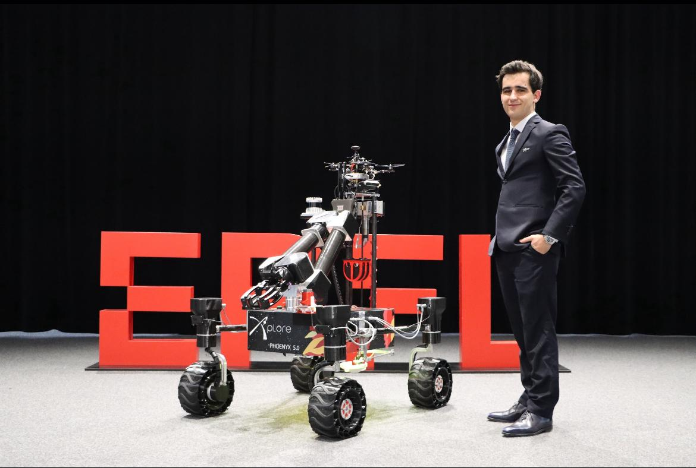

I make silicon think,
signals behave,
and teams ship.
There's a particular satisfaction in watching a logic analyzer confirm that your custom protocol hit its timing constraints at 3 AM. I'm the engineer who designs those constraints, implements the hardware, debugs the edge cases, and documents it so the next person doesn't have to reverse-engineer my midnight decisions.
Bare-metal FirmwareFPGA/HLS AccelerationRF & Analog ComputingSystem Architecture
120+
50x
2.4 GHz
0 CRC

Design the failure modes first. The happy path is just what's left.
Most of my code runs where printf isn't an option—STM32s strapped to rovers,
ESP32s in RF enclosures, Zynq fabric talking to ARM cores. I treat every register
write like it's being reviewed by the debugging session I'll have in six months.
Make FPGAs Do Real Work
Whether it's pipelining FFTs for radio astronomy or fusing convolution layers
into single clock cycles, I use HLS and RTL to turn timing diagrams into working
silicon. The goal isn't "FPGA for its own sake"—it's hitting latency or power
budgets that software can't touch.
Build Systems, Not Just Circuits
At EPFL Xplore, I coordinated avionics, power, and software teams—not by
managing spreadsheets, but by owning the interfaces between them. Clean APIs,
versioned protocols, and integration tests that catch bugs before they become
someone else's problem.
Push Into Weird Physics
My thesis explored analog computing—using tunable metasurfaces and optical
setups to perform neural network activations in the physical layer. It's the
kind of work where a VNA sweep is your debugger and simulation is just a
hypothesis.
Failure modes first. Every watchdog, timeout, and CRC exists because I imagined the demo failing in front of stakeholders. Plan for the crash; the happy path takes care of itself.
Constraints are the creative brief. Power budgets, timing margins, EMI limits—these aren't obstacles. They're the specifications that separate elegant solutions from over-engineered ones.
If it's not measurable, it's not real. Logic analyzers, oscilloscopes, profilers. I don't trust code until I've seen it behave in the real world with real timing.
Documentation is a gift to your future self. Interface specs, state diagrams, and clear commit messages aren't overhead—they're the only thing that survives personnel changes.
Ship working systems, not perfect modules. A rover that drives beats a motor driver that's still being optimized. Integration reveals the bugs that unit tests miss.
Building something that needs to actually work?
I'm interested in projects where reliability matters—aerospace, robotics, scientific instruments, or anything where "it works on my machine" isn't good enough.